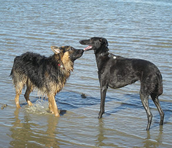

Honderonde biedt een lokale uitlaatdienst aan voor uw hond. We werken in R'dam Overschie alsmede in de directe omgeving van Overschie, o.a in de wijken Blijdorp en Mathenesse. Andere wijken gaan in overleg. Door lokaal en met kleine groepen te werken blijft de reisduur naar de uitlaatplek beperkt.
De hoofdactiviteit bestaat uit het dagelijks uitlaten van uw trouwe viervoeters gedurende twee rondes per dag. De ochtendgroep loopt tussen 11.00 en 12.00 en de middaggroep loopt tussen 14.30 en 15.30 uur. Het uitlaten van de groep vindt plaats op een mooie plek in een natuurgebied alwaar ze een vol uur kunnen spelen, rennen en zwemmen. We zijn altijd met twee personen voor een optimaal toezicht. De groepen zijn zorgvuldig samengesteld en niet groter dan acht honden per ronde. Als u hond behoefte heeft aan individuele uitlaatbeurten neem dan even contact op. Het individuele uitlaten vind plaats bij u in de buurt. Verder is het mogelijk om extra diensten met ons te bespreken zoals speciale verzorging bij ziekte van uw huisdier. Zorg, aandacht en betrokkenheid vinden we belangrijk.